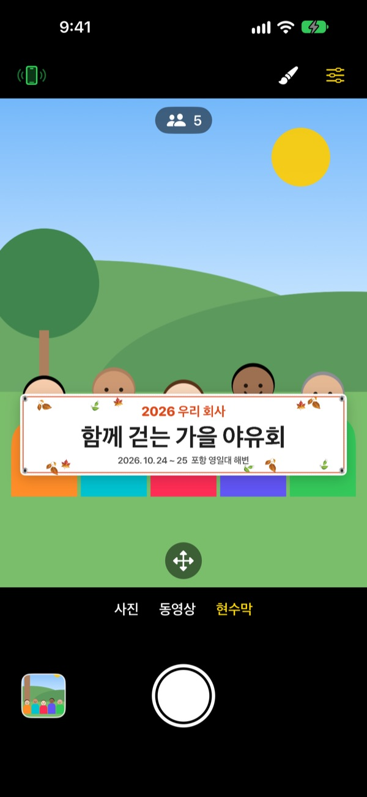
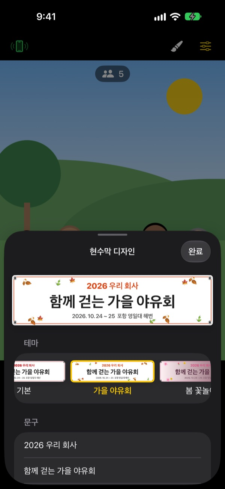

현수막 든 단체사진,
현수막 없이
문구를 적고 테마를 고르면 화면 속 현수막이 모두의 앞에 놓입니다. 친구 iPhone은 QR 한 번으로 리모컨이 되어, 찍는 사람까지 사진 안에 들어갑니다.
모든 기능이 무료입니다. iOS 17 이상에서 동작합니다.

현수막을 직접 만들어 보세요
문구를 고치고 테마를 눌러 보세요. 셔터를 누르면 앱처럼 3초를 세고 찍습니다.
사진 한 장 때문에 현수막을 맞추고 계신가요?
야유회 사진 한 장을 위해 현수막을 주문하고, 당일 챙겨 가고, 끝나면 둘 곳이 없습니다. 찍어 줄 사람도 없어 누군가는 늘 사진 밖에 남고요. ShutterLink는 현수막을 화면 속에 띄우고 친구 iPhone을 리모컨으로 바꿔, 모두가 현수막을 든 사진 안에 들어가게 합니다.
우리 모임에 맞는 현수막을 1분 만에
가을 야유회, 봄 꽃놀이, 송년회, 생일, 체육대회, 졸업, 결혼, 회사 워크숍 등 테마 13가지에서 고르고 문구 세 줄을 직접 씁니다.
배경, 글꼴, 장식, 색, 비율을 바꾸고 로고 사진도 넣을 수 있습니다. 천, 비닐, 종이 재질을 고르면 천 현수막은 실제처럼 처지고 주름지며 바람에 흔들립니다.

리모컨은 설치 없이 QR 한 번
왼쪽 위 리모컨 버튼을 누르면 QR 코드가 나옵니다. 친구가 기본 카메라로 비추면 ShutterLink Remote가 App Clip으로 바로 열려 연결됩니다.
리모컨 화면의 실시간 미리보기에는 현수막까지 보여서, 구도를 잡고 그대로 셔터를 누르면 됩니다. 찍은 사진은 리모컨 iPhone에도 바로 와서 앱이 없는 친구도 그 자리에서 저장하고 공유합니다.
시작은 세 단계면 됩니다
- 1
iPhone을 세웁니다
ShutterLink를 열고 삼각대나 선반에 세웁니다.
- 2
현수막을 놓습니다
아래에서 현수막을 고르고 붓 버튼으로 문구와 테마를 정한 뒤, 사람들이 설 자리 바닥을 탭합니다.
- 3
손바닥을 듭니다
손바닥을 들거나 리모컨 셔터를 누르면 타이머가 세고 찍습니다.
단체사진을 위한 기능
- 손바닥 · 박수 셔터
- 카메라를 향해 손바닥을 들거나 크게 한 번 손뼉을 치면 타이머가 시작됩니다
- 미소 셔터
- 모두 눈을 뜨고 웃으면 저절로 찍습니다
- 타이머 3 · 5 · 10 · 20 · 30초
- 목소리로 숫자를 세고 플래시가 함께 깜빡이며, 리모컨은 손에서 진동으로 알려 줍니다
- 모두 카메라를 보도록 안내
- 누르면 카메라 iPhone이 소리 내어 모두의 시선을 모읍니다
- 연속 3장 · 5장
- 모두 눈 뜨고 웃는 베스트샷을 골라 둡니다. 갤러리에서 다른 장으로 바꿀 수도 있습니다
- 인원 수 · 가장자리 · 수평계
- 몇 명인지 세고, 가장자리에 걸린 사람과 기울어진 화면을 알려 줍니다
- 인터벌 3초 ~ 1분
- 노을이나 작업 과정을 일정한 간격으로 남깁니다
- 카메라 조작
- 탭 초점과 노출, 노출 보정, 플래시, 격자, 0.5배부터 최대 10배 줌(기기에 따라 다름), 전후면 전환, 동영상
- 간편 모드
- 리모컨에 큰 셔터 버튼 하나만 보여 어르신도 쉽게 누릅니다
- 볼륨 버튼 · Camera Control
- 리모컨 없이 카메라 iPhone에서 바로 셔터를 누릅니다
현수막 모드에서는 플래시, 연속 촬영, 줌, 전면 카메라를 쓸 수 없습니다. 타이머, 손바닥 셔터, 리모컨은 그대로 됩니다.
모든 기능이 무료입니다
무료
- 현수막 모드와 테마 13가지
- 설치 없는 리모컨 (App Clip)
- 손바닥, 박수, 미소 셔터와 타이머
- 베스트샷, 인원 수, 수평계
- 동영상과 인터벌 촬영
응원하기 (선택)
- 설정에서 작은 팁, 보통 팁, 큰 팁 중 하나를 보낼 수 있습니다
- 팁은 기능을 열거나 잠그지 않습니다
구독이 아니라 보낼 때만 한 번 결제합니다.
광고도 계정 가입도 없습니다.
자주 묻는 질문
무엇이 필요한가요?
촬영할 iPhone에 ShutterLink를 설치합니다(iOS 17 이상). 리모컨으로 쓸 iPhone은 설치가 필요 없고, App Clip을 처음 열 때 한 번만 인터넷이 필요합니다. 두 iPhone 모두 Bluetooth를 켜고 가까이(보통 10m 이내) 두세요.
QR을 스캔해도 App Clip이 열리지 않아요.
리모컨 iPhone이 인터넷에 연결되어 있는지 확인하세요. QR 대신 ShutterLink Remote 화면에 카메라 iPhone의 4자리 연결 코드를 넣고 연결을 눌러도 됩니다. 설정 › 스크린 타임 › 콘텐츠 및 개인정보 보호 제한에서 App Clip이 막혀 있지 않은지도 확인하세요.
"카메라 찾는 중…"에서 멈춰요.
카메라 iPhone에서 ShutterLink가 화면에 켜져 있어야 합니다. 두 iPhone 모두 설정 › Bluetooth에서 Bluetooth가 켜져 있는지 확인하세요. 연결 코드는 앱을 켤 때마다 바뀌니, 앱을 다시 켰다면 새 QR이나 새 코드로 연결하고 다시 시도를 누르세요.
"Bluetooth 권한이 거부되었습니다"가 보여요.
설정 › 개인정보 보호 및 보안 › Bluetooth에서 ShutterLink를 켜세요. 리모컨 쪽은 App Clip이라 목록에 없을 수 있으니, 그럴 땐 QR을 다시 스캔해 권한 요청에서 허용을 누르세요.
미리보기가 끊기거나 흐려요.
미리보기는 Bluetooth로 보내려고 일부러 작게 줄인 화면입니다. 실제 사진과 동영상은 카메라 iPhone의 원래 화질로 저장됩니다. 두 iPhone 사이에 벽이나 사람이 있거나 거리가 멀면 끊길 수 있지만, 그때도 셔터와 다른 조작은 계속 됩니다.
찍은 사진은 어디에 있나요?
카메라 iPhone의 사진 앱과 앱 안 갤러리에 저장됩니다. 리모컨 iPhone에도 사본이 오지만 저절로 저장되지는 않으니, 리모컨을 닫기 전에 저장하거나 공유하세요. 사진 앱에 저장되지 않으면 설정 › 개인정보 보호 및 보안 › 사진에서 ShutterLink를 허용하세요.
동영상에 소리가 녹음되지 않아요.
설정 › 개인정보 보호 및 보안 › 마이크에서 ShutterLink를 켜세요.
리모컨을 여러 대 연결할 수 있나요?
네. 같은 QR이나 연결 코드로 여러 iPhone이 동시에 연결되고, 어느 리모컨에서 눌러도 같은 카메라가 찍습니다.
촬영 중에 연결이 끊겨요.
ShutterLink는 켜져 있는 동안 화면이 저절로 꺼지지 않게 합니다. 측면 버튼으로 잠그거나 다른 앱으로 가면 연결이 끊기니 촬영하는 동안에는 앱을 화면에 켜 두세요.
사진이 어딘가로 올라가나요?
아니요. 두 iPhone이 Bluetooth로 직접 연결되고, 사진과 동영상은 촬영한 iPhone과 연결한 리모컨에만 남습니다. 인터넷이 없는 산이나 바다에서도 쓸 수 있고 계정도 필요 없습니다.
해결되지 않았거나 버그를 찾았다면 leeo@kakao.com로 알려 주세요. 두 iPhone의 기종과 iOS 버전을 적어 주시면 빨리 확인할 수 있습니다.